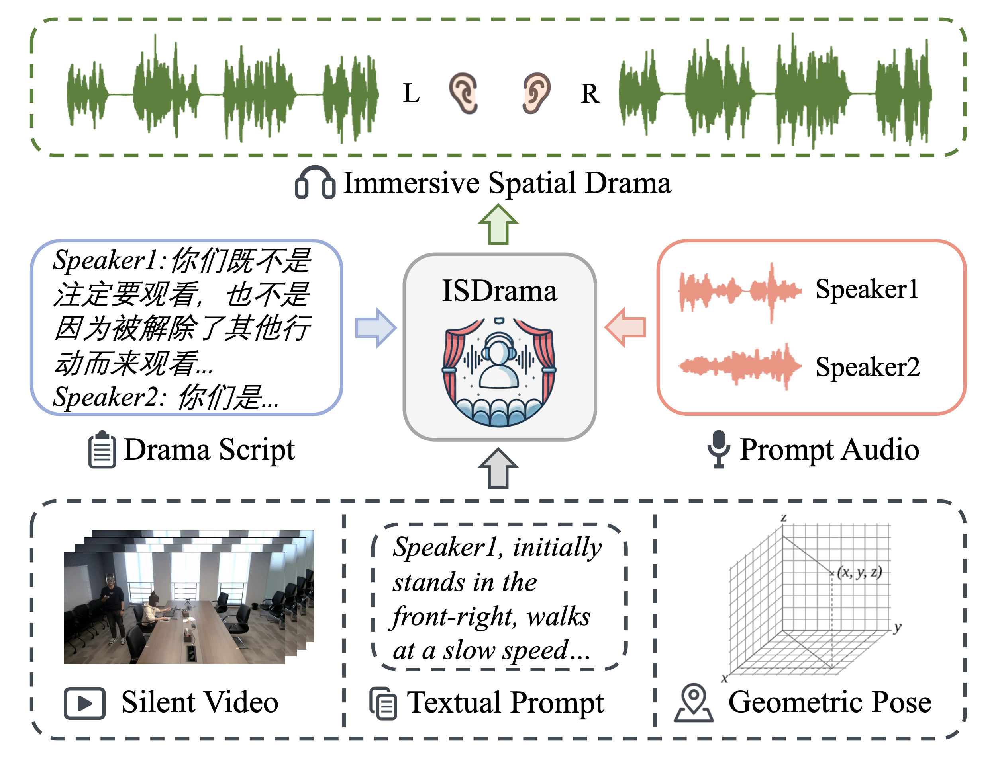
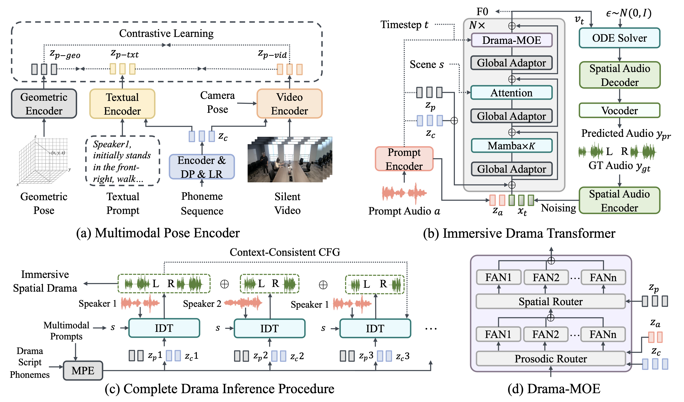

Abstract.
Multimodal immersive spatial drama generation focuses on creating continuous multi-speaker binaural speech with dramatic prosody based on multimodal prompts,
with potential applications in AR, VR, and others. This task requires simultaneous modeling of spatial information and dramatic prosody based on multimodal inputs,
with high data collection costs. To the best of our knowledge, our work is the first attempt to address these challenges.
We construct MRSDrama, the first multimodal recorded spatial drama dataset, containing binaural drama audios, scripts, videos, geometric poses,
and textual prompts. Then, we propose ISDrama, the first immersive spatial drama generation model through multimodal prompting.
ISDrama comprises these primary components: 1) Multimodal Pose Encoder, based on contrastive learning,
considering the Doppler effect caused by moving speakers to extract unified pose information from multimodal prompts.
2) Immersive Drama Transformer, a flow-based mamba-transformer model that generates high-quality drama, incorporating Drama-MOE to select proper experts for enhanced prosody and pose control.
We also design a context-consistent classifier-free guidance strategy to coherently generate complete drama. Experimental results show that ISDrama outperforms baseline models on objective and subjective metrics.
Model Overview

In this paper, we first introduce MRSDrama, the first multimodal recorded spatial drama dataset, comprising binaural drama audios, scripts, videos, geometric poses, and textual prompts.
The dataset includes 97.82 hours of speech data recorded by 21 speakers across three scenes.
Next, we propose ISDrama, the first immersive spatial drama generation model based on multimodal prompting.
ISDrama generates high-quality, continuous, multi-speaker binaural speech with dramatic prosody and spatial immersion, driven by multimodal prompts.
To extract a unified pose representation from multimodal prompts, we design the Multimodal Pose Encoder, a contrastive learning-based framework that encodes not only position and head orientation but also radial velocity, accounting for the Doppler effect caused by moving speakers.
Meanwhile, we develop the Immersive Drama Transformer, a flow-based Mamba-Transformer model capable of generating immersive spatial drama effectively and stably.
Within this model, we introduce Drama-MOE (Mixture of Experts), which selects the appropriate experts to enhance prosodic expressiveness and improve pose control.
Then, we adopt a context-consistent classifier-free guidance (CFG) strategy to ensure the quality and coherence of complete drama generation.

🎧🎧🎧 Please use ear phones to listen to the generated audio samples. 🎧🎧🎧
🎙️🎙️🎙️For Fair Comparison, all samples are resampled to 48kHZ.🎙️🎙️🎙️
In this section, we present generated samples of continuous multi-speaker binaural speech with dramatic prosody with silent video input.
We input the drama script as content, the prompt audios to specify timbres of different speakers, the silent video (and camera direction) as the pose prompt and scene information, then ISDrama generates the immersive spatial drama.
Demo1: Henry IV
Audio Prompt Input
Speaker1:Speaker2:
Speaker3:Speaker4:
Generated Binaural Audio with Silent Video
Demo2: Waiting for Godot
Audio Prompt Input
Speaker1:Speaker2:Speaker3:
Generated Binaural Audio with Silent Video
Demo3: Troilus and Cressida
Audio Prompt Input
Speaker1:Speaker2:
Speaker3:Speaker4:
Generated Binaural Audio with Silent Video
Geometric Pose Generation Results
In this section, we present generated samples of single binaural speech with dramatic prosody for better comparison with baseline models.
We input the drama script as content, the prompt audios to specify timbre, geometric pose (3D position and quaternion orientation) as the pose prompt, and scene information, then ISDrama generates the binaural audio.
The actual geometric pose is provided as frame-level sequences, and here we present the textual representation for better understanding.
Geometric Pose Input
The speaker stands at (-76.2, -76.2, 60.3) for 1.46s. Then, the speaker walks to (30.8, -76.2, 60.3) with speed (7.8, 0, 0) and stops after 12.3s.
Geometric Pose Input
The speaker stands at (76.2, -228.6, 50.3) for 1.59s. Then, the speaker walks to (76.2, -76.2, 50.3) with speed (0, 23.1, 0) and stops after 6.6s. Then, the speaker stands at (76.2, -76.2, 50.3) for 5.47s.
Geometric Pose Input
The speaker walks from (32.0, -228.6, 64.3) to (-76.2, -228.6, 64.3) with speed (-12.1, 0, 0) and stops after 8.92s. Then, the speaker stands at (-76.2, -228.6, 64.3) for 4.44s.
ISDrama(ours)
CosyVoice
FireRedTTS
F5-TTS
Demo4: Waiting for Godot
Audio Prompt Input
Audio Prompt:
Script Input
不，不，咱们也许可以从头再来一遍。
Geometric Pose Input
The speaker stands at (-76.2, -76.2, 60.3) for 0.44s. Then, the speaker walks to (56.7, -76.2, 60.3) with speed (32.6, 0, 0) and stops after 4.08s.
ISDrama(ours)
CosyVoice
FireRedTTS
F5-TTS
Textual Prompt Generation Results
In this section, we present generated samples of continuous multi-speaker binaural speech with dramatic prosody with textual prompts.
We input the drama script as content, the prompt audios to specify timbres of different speakers, textual prompt for each actor's line as the pose prompt, and scene information, then ISDrama generates the immersive spatial drama.
Demo1: Offending the Audience
Textual Prompt Input
Speaker 1 initially stands still at near back-right, facing front.
Then Speaker 1 walks from near back-right to near back-right slowly, facing front. Then, speaker 1 stops at near back-right, facing front.
Then Speaker 1 stands still at near back-right, facing front. After a short time, speaker 1 walks from near back-right to near back-left moderately, facing front.
Speaker 1 initially stands still at near front-right, facing front. After a medium time, speaker 1 walks from near front-right to near front-right slowly, facing front.
Speaker 2 sits at near front-left, facing right.
Speaker 1 initially stands still at near front-right, facing front. After a short time, speaker 1 walks from near front-right to near back-right slowly, facing front. Then, speaker 1 stops at near back-right, facing front.
Then, speaker 1 stands still at near back-right, facing front.
Speaker 2 sits at near front-left, facing right.
Speaker 1 initially stands still at near back-right, facing front. After a medium time, speaker 1 walks from near back-right to near back-left slowly, facing front.
Then, speaker 1 walks from near back-left to near back-left slowly, facing front. Then, speaker 1 stops at near back-left, facing front.
Speaker 2 initially stands still at near front-right, facing front. After a short time, speaker 2 walks from near front-right to near back-right moderately, facing front. Then, speaker 2 stops at near back-right, facing front.
Speaker 1 sits at near front-left, facing right.
Speaker 2 initially stands still at near back-right, facing front.
Speaker 1 sits at near front-left, facing right.
Speaker 2 initially stands still at near back-right, facing front. After a short time, speaker 2 walks from near back-right to near back-left quickly, facing front. Then, speaker 2 stops at near back-left, facing front.
Speaker 1 sits at near front-left, facing right.
Speaker 2 stands still at near back-left, facing front.
Speaker 1 sits at near front-left, facing right.
Speaker 2 initially stands still at near back-left, facing front. After a short time, speaker 2 walks from near back-left to near back-left quickly, facing front. Then, speaker 2 stops at near back-left, facing front.